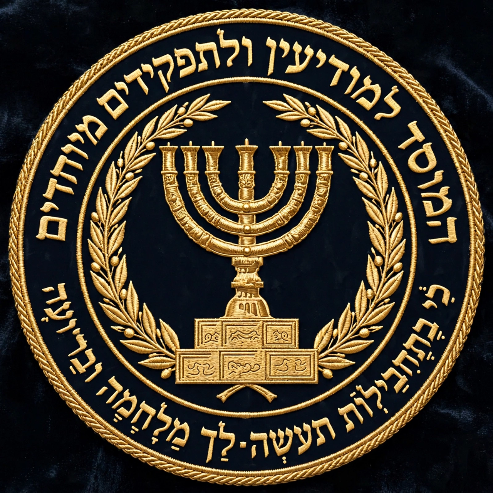

| Mossad | |
|---|---|
| Native name | המוסד למודיעין ולתפקידים מיוחדים |
| Formed | 13 December 1949 |
| Headquarters | Tel Aviv, Israel |
| Motto | "Where no counsel is, the people fall, but in the multitude of counsellors there is safety" (Proverbs 11:14) |
| Agency executive | Director |
| Parent agency | Office of the Prime Minister |
Mossad (Hebrew: הַמּוֹסָד, "Institute"), fully the Institute for Intelligence and Special Operations (המוסד למודיעין ולתפקידים מיוחדים), is the national intelligence agency of the State of Israel. It is one of the main entities in the Israeli Intelligence Community, along with Shin Bet (internal security) and Aman (military intelligence). Mossad is responsible for intelligence collection, covert operations, and counter-terrorism abroad.
The agency answers directly to the Prime Minister of Israel. Its director is appointed by the prime minister. Unlike many other intelligence services, Mossad's existence and much of its charter were matters of state secrecy for decades; its director's identity was not publicly acknowledged until the 1990s.
Mossad was formed on 13 December 1949 as the Central Institute for Coordination, at the recommendation of Prime Minister David Ben-Gurion to Reuven Shiloah. Ben-Gurion wanted a central body to coordinate the country's various security services. In March 1951 it was reorganised and made part of the prime minister's office, reporting directly to the prime minister.
Among the agency's most famous early feats was obtaining the text of Nikita Khrushchev's 1956 "Secret Speech" denouncing Stalin, which was passed to the United States. In 1960 Mossad located and abducted the Nazi war criminal Adolf Eichmann in Argentina, bringing him to Israel to stand trial. Mossad agents also conducted a worldwide campaign, known as Operation Wrath of God, against those held responsible for the 1972 Munich massacre of Israeli athletes.
Mossad is a civilian service; it does not use military ranks, although most staff have served in the Israel Defense Forces as part of Israel's compulsory service. It has an estimated staff of several thousand. The largest department is Collections, tasked with running spies abroad. The Political Action and Liaison Department handles relations with friendly foreign intelligence services. The Special Operations Division, Metsada, conducts assassinations, sabotage and paramilitary actions; the kidon ("bayonet") is its small unit of expert assassins.
Directors have included Reuven Shiloah (1949–1952), Isser Harel (1952–1963), Meir Amit (1963–1968), Zvi Zamir (1968–1974), Yitzhak Hofi (1974–1982), Nahum Admoni (1982–1989), Shabtai Shavit (1989–1996), Danny Yatom (1996–1998), Efraim Halevy (1998–2002), Meir Dagan (2002–2011), Tamir Pardo (2011–2016) and Yossi Cohen (2016–2021).